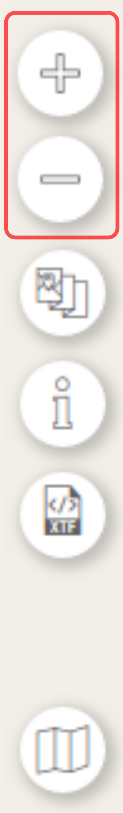
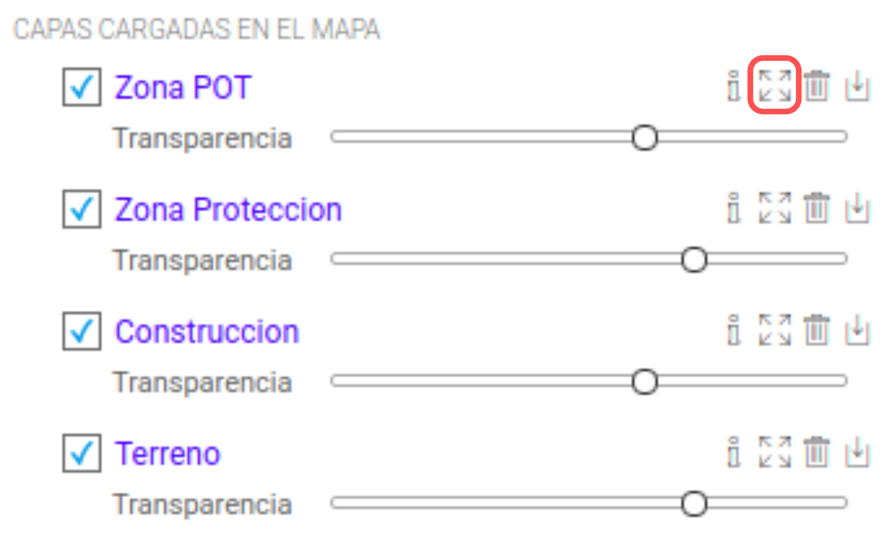

Zoom
Las siguientes funciones de zoom no permanecen activas, después del clic sus acciones no se detienen.

Herramientas de Navegacion
- Zoom Más: Permite acercarse usando el centro del mapa como punto de enfoque
- Zoom Menos: Permite alejarse usando el centro del mapa como punto de enfoque
- Zoom a la Capa: Permite visualizar una vista con la extensión de la capa

Zoom a la Capa